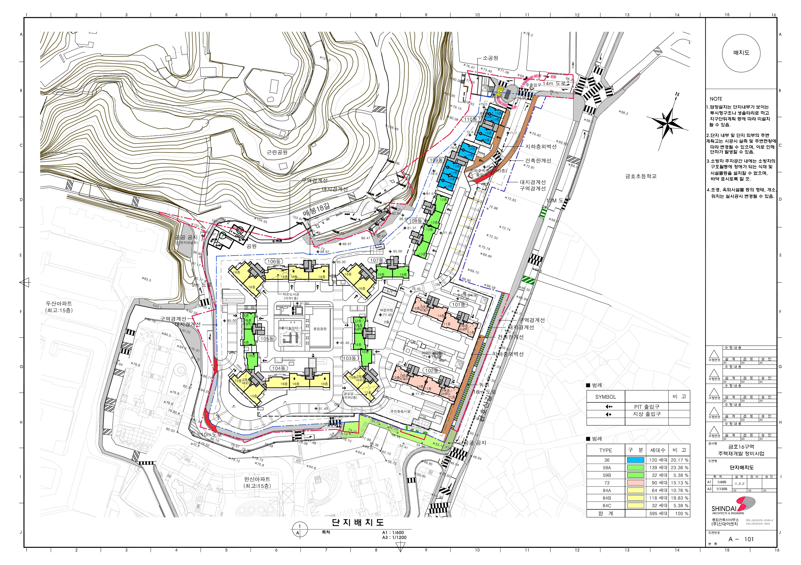
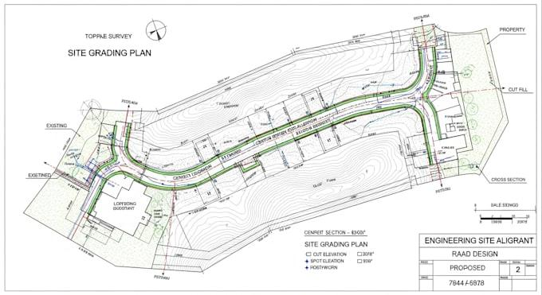
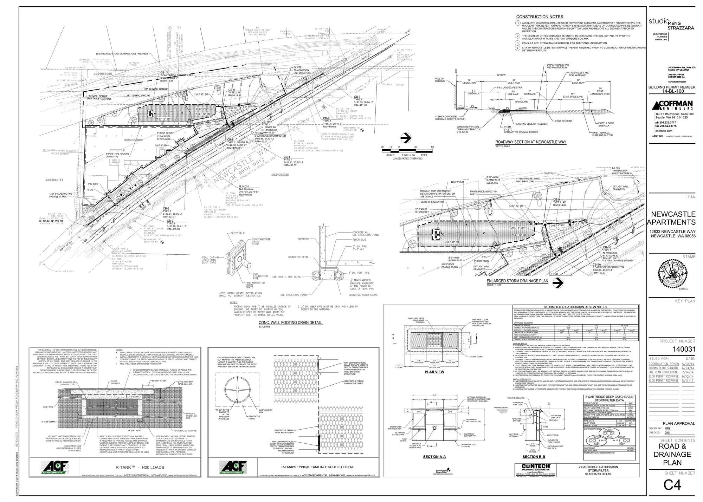
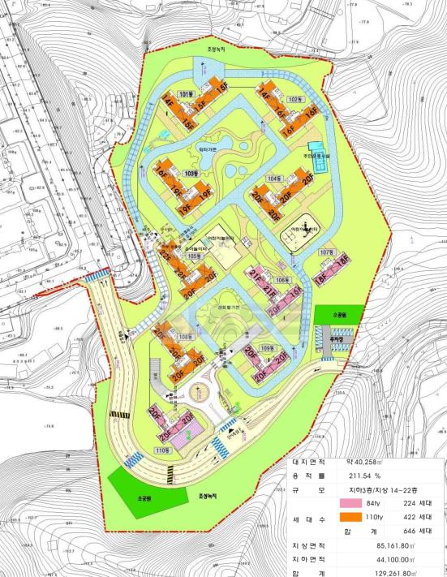
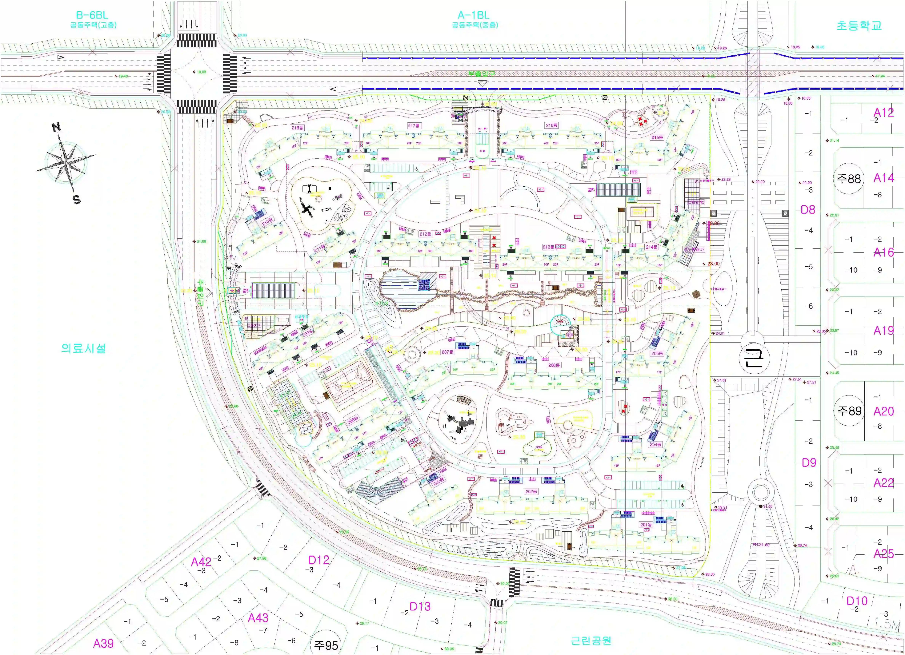

홈 / 성공사례
사례는 사건명이 아니라
막힌 지점입니다.
도면은 검토 형식을 보여 주기 위한 예시입니다. 타 기관 서식이 섞여 있으며, 이 사무소가 작성·허가받은 도면이라고 쓰지 않습니다. 같은 결과가 난다는 뜻이 아닙니다.

CASE 01 · 배치
단지 배치와 등고
경사·동선·녹지를 한 장에서 가릅니다.
보기 →
CASE 02 · 지형
절성토·그레이딩
개발행위에서 지형 변경 규모를 볼 때.
보기 →
CASE 03 · 기반
도로·배수 계획
접도와 우수 처리가 막히면 허가가 서지 않는 경우가 많습니다.
보기 →
CASE 04 · 주택
공동주택 배치
동 배치와 세대 규모를 인허가 관점에서 읽습니다.
보기 →
CASE 05 · 입지
주변 시설·필지
학교·공원·인접 필지와의 관계를 같이 봅니다.
보기 →